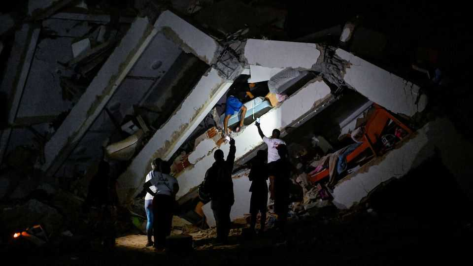

The Americas
Two powerful earthquakes hit Venezuela
Such tightly sequenced quakes are rare
June 25th 2026

Two powerful earthquakes hit Venezuela in quick succession on June 24th. The United States Geological Survey (USGS) said the first had a magnitude of 7.2, with an epicentre 170km west of Caracas, the capital. The second measured 7.5 and hit 16km away. Such tightly sequenced “doublet” quakes are rare. Delcy Rodríguez, Venezuela’s acting president, said 32 people had been killed and 700 injured, but the death toll will climb. USGS reckons there’s a 44% chance that 10,000 are dead. ■
Sign up to El Boletín, our subscriber-only newsletter on Latin America, to understand the forces shaping a fascinating and complex region.